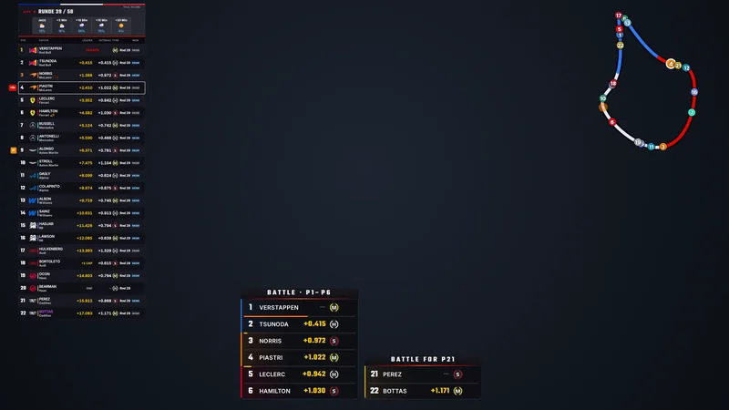
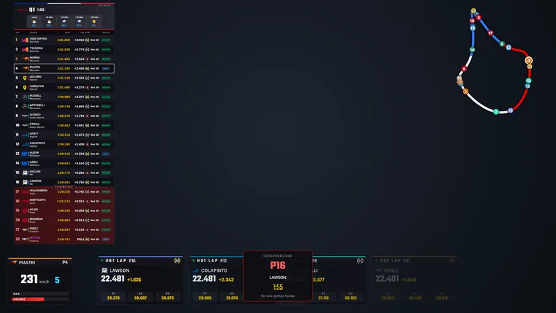
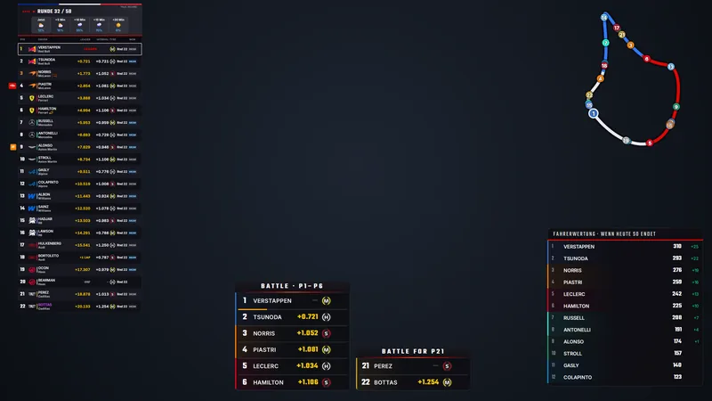
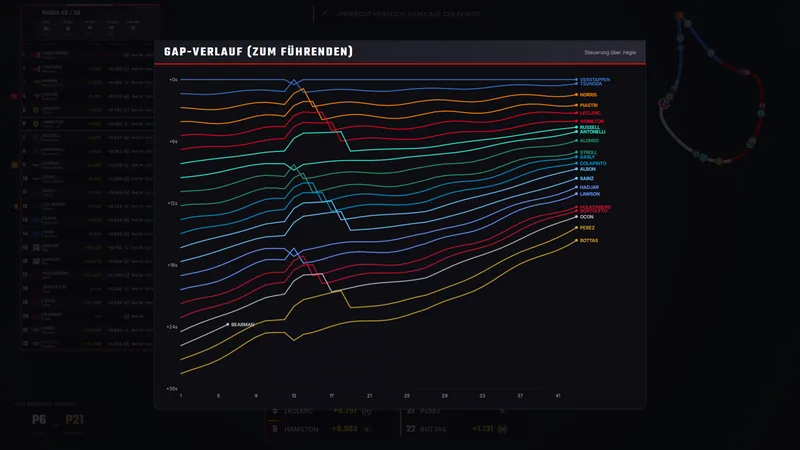
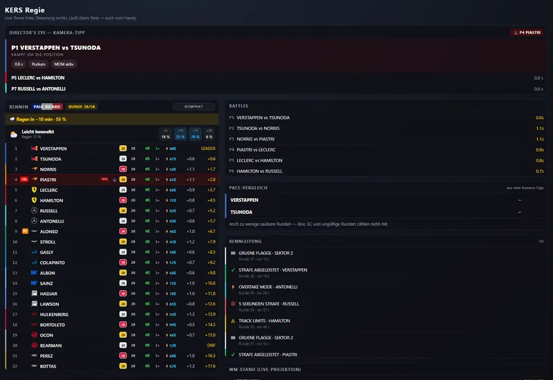

Über dem Spiel
Ein rahmenloses Fenster, immer oben. Gesperrt gehen alle Klicks hindurch — du spielst normal weiter, während das Overlay darüber liegt.
KERS Subsystems hört auf den Telemetrie-Strom von F1 26 und macht daraus ein Overlay, das die Lage sofort lesbar macht: Timing Tower, Trackmap, Kampfgruppen, Boxenstopps, Strafen. Als rahmenloses Fenster über dem Spiel — und als eigenes Fenster für die Aufnahme in OBS.
Ein rahmenloses Fenster, immer oben. Gesperrt gehen alle Klicks hindurch — du spielst normal weiter, während das Overlay darüber liegt.
Ein zweites, undurchsichtiges Fenster in Canvas-Größe. In OBS per Fensteraufnahme holen, Farbschlüssel auf Magenta — fertig.
Regie und Einstellungen sind die beiden Seiten im Browser. Im selben WLAN steuerst du das Overlay vom Handy — bis hin zur Kamera im Spiel.
Demnächst · Version 0.3.0
Server und Overlay werden ein einziges Programm — ohne Python und ohne Chromium im Hintergrund. Dasselbe Overlay, dieselben Einstellungen, nur viel leichter.
Kanal eingeben, und Chat samt Mini-Stream klappen neben der Regie auf — auch auf dem Handy.
Was Server und HUD melden, steht im Schaltbrett unter Log — und in data\kers.log für den Support.
Nach dem Wechsel von der Quali ins Rennen ist die Karte einer bekannten Strecke sofort wieder da.
Läuft noch ein zweites Programm auf 20777, sagt das Schaltbrett Port belegt, statt dass sich zwei die Pakete teilen.
Von 0.2.6 geht es über den Update-Knopf im Schaltbrett. Zurück auf 0.2.x geht genauso.
Dieselben Bausteine, dasselbe Layout, deine Einstellungen und WM-Stände — nur der Motor darunter ist neu.

Noch im Test — kommt, sobald es im Rennen und mit OBS sitzt, als Update direkt über den Knopf im Schaltbrett. Den Stand kannst du schon auf GitHub verfolgen.
Im Bild
Aufnahmen aus dem Overlay selbst — im eingebauten Demo-Rennen, also mit erfundenen Daten statt einer Aufnahme aus dem Spiel.





Alles im Einzelnen
Jedes Thema hat seine eigene Seite — mit dem, was dort wirklich zählt, statt allem auf einmal.
Die Battle-Boxen sagen den Zweikampf voraus, bevor er zu sehen ist — und in der Regie tippst du auf einen Fahrer und bist im Spiel bei ihm.
AnsehenAlle 13 Teile einzeln — Timing Tower, Trackmap, Battle-Boxen, Onboard, WM-Stand.
AnsehenNeun Ankerpunkte, Größe und Ebene je Baustein, mehrere Anordnungen unter Namen gespeichert.
AnsehenDirector’s Eye, Charts und Boxen von Hand einblenden — vom zweiten Bildschirm oder vom Handy.
AnsehenDas eigene OBS-Fenster, die Fensteraufnahme und der Farbschlüssel — in drei Handgriffen.
AnsehenHerunterladen, Telemetrie einschalten, starten, einrichten. Vier Schritte, keine Installation.
AnsehenPorts, Renderer, Renderrate — und was zu tun ist, wenn nichts ankommt oder OBS das Fenster nicht findet.
Ansehen0.3.0 in C++, rund 55 MB, die neue Regie mit Twitch-Chat — was gerade entsteht.
AnsehenEine Datei, kein Installer, keine Kosten. Läuft neben dem Spiel und aktualisiert sich selbst.
Aktuelle Version v0.2.6
Als Nächstes: 0.3.0 in C++ — kommt als Update über den Knopf im Schaltbrett. Was neu ist
Kostenlos & Open Source
Der ganze Quellcode liegt offen auf GitHub — was das Overlay rechnet, kann jeder nachlesen, ändern und weitergeben.
Entwickelt wird über Discord: Wünsche, Fehlerberichte und Zurufe aus laufenden Rennen landen dort und werden zur nächsten Version. Vieles auf dieser Seite steht genau deshalb drin.
{kind=link}
{kind=link}
{kind=link}
{kind=link}
{kind=link}